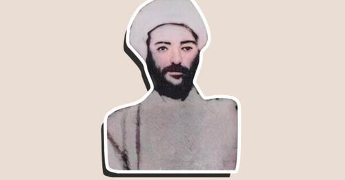

شێخ عەبدول سەلامی دووەم

شێخ عەبدولسەلام بارزانی دووەم لەسەر بزووتنەوەی سەربەخۆیی کوردستان و ھەوڵەکان بۆ ڕزگاربوون لە دەسەڵاتی عوسمانییەکان ساڵی ١٢٦٩ مانگی، بە سەرکردایەتی شێخ عوبەیدوڵڵا شەمزیینان، بە شێوەیەکی کاریگەر بەشدارییان کرد. ھەروەھا شێخ محەممەد
بارزانی کوڕی گەورە و جێنشین شێخ عەبدولسەلام، بەرامبەر بە خوان بەدکاران و بەکرێگیراوانی حکوومەت خۆپیشاندانیان ئەنجامدا و پاش ماوەیەک لەلایەن حکوومەت عوسمانی ماوەیەک لە زیندانی بدلیس زیندانی کرا و پاشان دیپۆرتی مووسڵ کرا. شێخ محەممەد بارزانی پێنج کوڕی ھەبوو: عەبدولسەلام (دووەم)، شێخ ئەحمەد، شێخ محەممەد سدیق، شێخ بابۆ و مەلا مستەفا.[١]
یەکەم ڕاپەڕینی
بارزانی لە ڕاستیدا لە ساڵی ١٩٠٩ دا کرا. گەنجانی تورک کە بە کودەتایەک لە ساڵی ١٩٠٩ دا لە دژی سوڵتان عەبدولحەمید ھەموو دام و دەستەکانی دەسەڵات لە تورکیا بە پێچەوانەی بەڵێنەکانی پێشوویان، کەم بە زەخت و گوشار لەسەر گەلان ناتورکیزمیان چڕکردەوە و چالاکی نەتەوایەتییان قەدەغە کرد چەند مانگێک پاشان شێخ عەبدولسەلام بارزانی ڕاپەڕینێکی هەڵگیرساند
لە یەکەم شەڕدا لە نێو سوپای ئەو و تورکیا شکستێکی سەختیان پێبەخشین و مەودای ڕاپەڕینیش ھێدی ھێدی درێژ بووەوە بۆ بدلیس لە ساڵی ١٩١٠ دا ھێزەکانی عوسمانی بارزان و بارزانیان لە ناوچەکەیان بە جێھێشت. ئەوان مانەوە ھاوکات عوسمانییەکان یش توانییان لە سێری بدلیسدا سەرکوت بکەن حکوومەتی یەمەن لە ساڵی ١٩١٣ دا ژمارەیەکی زۆر کوردیان دەستگیر کرد
بەبیانووی پیلانگێڕان لە دژی حکوومەت.
ئەویش دەستگیرکرا و ناوی شێخ عەبدولسەلام ھاتووە ناو.[٢] شێخ عەبدولسەلام (دووھەم) کوڕی شێخ محەممەد بارزانی، کوڕەزای شێخ عەبدولسەلامی یەکەم، برا گەورەی مەلا مستەفای بارزانییە. چالاکییە سیاسییەکانی وەک بەرگریکار لەمافەکان میڵی کوردی بە بەشداری لە کۆنفرانسی «الشیوخ کرد و رؤساھم» بە ڕابەرایەتی شێخ محەممەدی قادری لە شاری دھۆک
لە ساڵی ١٩٠٧ دەستی پێکرد. لە ماوەی ١٩٠٧ تا ساڵی ١٩١٤ ھەرێمی بارزان لە دژی حکوومەتی عوسمانی ڕاپەسێو لە ناکۆکییە کۆمەڵایەتی و سیاسییەکانی سەردەمی ئەو بەژداری کرد و بەردەوام لەگەڵ پیاوان خێڵ بارزان لە دژی سوپای عوسمانی وەستاو شەڕی لەگەڵ کردن، ئەو لە چەند قۆناغێکدایە توانی شکست بە ھێزەکانی حکوومەت بھێنێ دوای ماوەیەک سوپایەکی
گرانبەھاترین سوپای عوسمانی و کوردەکانی سەر بە حکوومەت ناوچەی بارزانیان گەمارۆدا، ئەم شەڕە بووە ھۆی شکست پێھێنانی بارزانییەکان و ھەڵھاتنی شێخ
عەبدولسەلام و زۆرێک لە بنەماڵەی شێخ لەو کاتەدا بە دیل گیران، مەلا مستەفا بارزانی، منداڵێکی گەنج بوو کە لەگەڵ دایکیدا لە ناو دیلەکاندا بوو. دوای ساڵێک شێخ عەبدولسەلام سوپایەکی کۆکردەوە و گەڕایەوە بۆ شەڕ. عوسمانییەکان ڕۆیشتن، ئەم جارە، ھێزەکانی عوسمانی بەسەختی شکستیان ھێناو حکوومەت مەرجی ھەبوو. بۆ ئاشتی قبوڵ کرا و دیلەکان ئازاد کران و چەند
ساڵێک بە ئارامی تێپەڕی و کەسێک بۆ ناوی سەفوت بەیگ لە گوندی شێخ عەبدولسەلامەوە بە تۆمەتی کوشتنێک تۆمەتبارکرا بەو ھۆیەوە بارزانی ھەڵھات و جارێکی تر بارزان بە ھێزی حکوومەت گەمارۆ درا. دوای ماوەیەک شەڕ و کوشتار شێخ عەبدولسەلام خۆی نەدا بەدەستەوە، و بەرەو ئێران ھەڵات و لەگەڵ ئیسماعیل ئاغای سمکۆ پەیمانی دۆستایەتی و ھاوکاری کرد.[٣]
لەسێدارەدانی عەبدولسەلام
ڕۆژێک عەبدولسەلام لە ماڵی سۆفیێکدا بە ناوی عەبدوڵڵا میوان بوو، عەبدوڵڵا بە چاوچنۆکی ئاگاداری لەگەڵ تورکەکانا پەیوەندی هەبوو عەبدولسلام دەستگیرکرا. دوای ماوەیەک لە مووسڵ (١٩١٤ زایینی) لەسێدارە درا. دوای شێخ عەبدولسەلامی دووھەم، شێخ ئەحمەدی برای، خێڵی بارزانی بەڕێوەبرد.